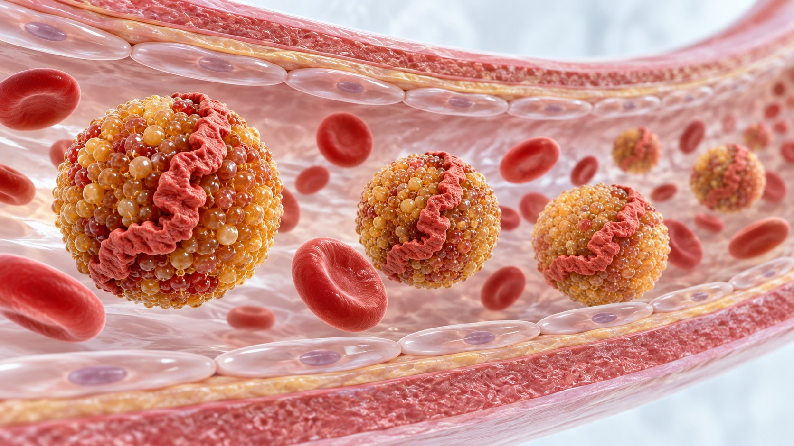

Szybka odpowiedź
ApoB przybliża liczbę aterogennych cząstek lipoprotein, ale nie istnieje jedna „norma po 50-tce”. W wytycznych ESC/EAS cele wtórne wynoszą poniżej 100, 80 lub 65 mg/dl odpowiednio dla umiarkowanego, wysokiego i bardzo wysokiego ryzyka. Wynik 0,80 g/l to 80 mg/dl. Decyzja zależy też od LDL, chorób, leków i całkowitego ryzyka.
Kluczowe wnioski
- Wiek 50 lat sam nie wyznacza celu ApoB; robi to kategoria ryzyka sercowo-naczyniowego.
- Przeliczenie jest proste: 1 g/l odpowiada 100 mg/dl, więc 0,80 g/l to 80 mg/dl.
- Cele ESC/EAS poniżej 100, 80 i 65 mg/dl są celami wtórnymi dla kolejnych kategorii ryzyka, nie zakresem referencyjnym dla wszystkich.
- Cena badania zmienia się między laboratoriami, dlatego artykuł nie podaje jednej kwoty jako stałej cechy testu.
Co dokładnie mierzy ApoB?
Każda aterogenna cząstka LDL, IDL, VLDL i lipoproteiny(a) zawiera jedną cząsteczkę ApoB100. Stężenie ApoB przybliża więc ich łączną liczbę, podczas gdy LDL-C opisuje ilość cholesterolu przewożonego w części z nich. Rozbieżność bywa ważna przy wysokich trójglicerydach, cukrzycy, otyłości lub bardzo niskim LDL-C.
Relację między parametrami porządkuje poradnik ApoB/ApoA1 i ryzyka serca.

Jak przeliczyć ApoB z g/l na mg/dl?
Wystarczy pomnożyć wynik w g/l przez 100. Przykładowo 0,65 g/l odpowiada 65 mg/dl, 0,80 g/l to 80 mg/dl, a 1,00 g/l to 100 mg/dl. Przed porównaniem zawsze sprawdź jednostkę na wydruku, ponieważ przepisanie samej liczby bez jednostki może całkowicie zmienić interpretację.
Zapisz także datę, leczenie i warunki pobrania; przydatny rytm kontroli opisuje plan badań krwi.
Czy wynik w zakresie laboratorium oznacza optymalny cel?
Niekoniecznie. Zakres referencyjny laboratorium opisuje rozkład lub przyjęte granice, a cel leczenia zależy od ryzyka. ESC/EAS podaje ApoB poniżej 100 mg/dl przy ryzyku umiarkowanym, poniżej 80 mg/dl przy wysokim i poniżej 65 mg/dl przy bardzo wysokim jako cele wtórne. Aktualizacja wytycznych z 2025 roku zachowała podejście oparte na kategorii ryzyka; kategorię ustala klinicysta.
LDL, nie-HDL i ApoB warto czytać wspólnie w Centrum Cholesterolu i Badań.
Kiedy wynik ApoB wymaga rozmowy z lekarzem?
Omów go szczególnie wtedy, gdy masz rozpoznaną chorobę sercowo-naczyniową, cukrzycę, przewlekłą chorobę nerek, rodzinną hipercholesterolemię albo gdy ApoB pozostaje wysokie mimo niskiego LDL-C. Nie zmieniaj samodzielnie statyny ani innego leczenia. Powtórzenie wyniku powinno służyć konkretnej decyzji, a nie pogoni za pojedynczą liczbą.
Jeżeli zmieniłeś sposób żywienia, porównaj wyniki z zasadami opisanymi w analizie keto, LDL i ApoB.
| Kategoria ryzyka | Cel ApoB | Znaczenie |
|---|---|---|
| Umiarkowane | poniżej 100 mg/dl | Cel wtórny po ocenie ryzyka |
| Wysokie | poniżej 80 mg/dl | Niższy cel z powodu większego ryzyka |
| Bardzo wysokie | poniżej 65 mg/dl | Najniższy z trzech celów wtórnych |
| Jednostka g/l | mg/dl = g/l × 100 | 0,80 g/l = 80 mg/dl |
ApoB jest liczbą cząstek związaną z ryzykiem, ale sens tej liczby nadaje dopiero kategoria ryzyka i cały profil pacjenta.
Czy do badania ApoB trzeba być na czczo?
Do samego oznaczenia ApoB rutynowe pobranie na czczo zwykle nie jest konieczne. Stanowisko EAS/EFLM dopuszcza lipidogram bez postu w większości sytuacji. Laboratorium lub lekarz może jednak zalecić pobranie na czczo, gdy równocześnie oceniane są inne parametry albo wcześniejsze trójglicerydy były bardzo wysokie.
Przy kontroli trendu warto zachować podobne warunki pobrania i zanotować zmiany leczenia. Termin powtórzenia zależy od celu badania i terapii; nie ma jednego odstępu odpowiedniego dla wszystkich.
Czy badanie ApoB można wykonać na NFZ?
Na opublikowanej przez NFZ liście badań zlecanych w POZ nie ma ApoB. Oznaczenie ApoB (kod I67) znajduje się natomiast w katalogu badań ambulatoryjnej opieki specjalistycznej. Nie oznacza to automatycznej dostępności dla każdej osoby: o wskazaniu i zleceniu badania decyduje lekarz, a możliwość wykonania warto potwierdzić w konkretnej poradni.
Najczęściej zadawane pytania
Jaka jest norma ApoB po 50-tce?
Nie ma osobnej normy wyłącznie z powodu wieku. Cel zależy przede wszystkim od całkowitego ryzyka sercowo-naczyniowego.
Czy ApoB 100 mg/dl jest wysokie?
Dla ryzyka umiarkowanego to granica celu wtórnego ESC/EAS; przy wysokim lub bardzo wysokim ryzyku cel jest niższy.
Jak przeliczyć ApoB z g/l na mg/dl?
Pomnóż g/l przez 100. Wynik 0,72 g/l odpowiada 72 mg/dl.
Czy ApoB zastępuje LDL?
Nie zawsze. Parametry opisują inne cechy lipoprotein i najczęściej interpretuje się je razem z całym profilem ryzyka.
Chcesz uporządkować LDL, ApoB, trójglicerydy i plan badań? Zobacz Centrum Cholesterolu i Badań po 50-tce.
Źródła
- 2025 Focused Update of the ESC/EAS dyslipidaemia guideline
- 2019 ESC/EAS dyslipidaemia guideline
- NLA consensus on ApoB
- EAS/EFLM consensus on atherogenic lipoproteins
- ApoB and clinical practice review
- NFZ — lista badań dostępnych w POZ
- NFZ — katalog badań AOS, ApoB I67
Uwaga: Artykuł ma charakter informacyjny i edukacyjny. Nie zastępuje konsultacji, diagnozy ani indywidualnego leczenia.